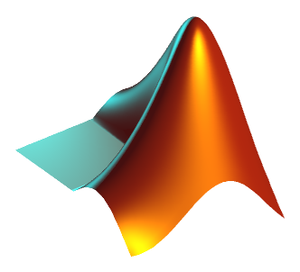
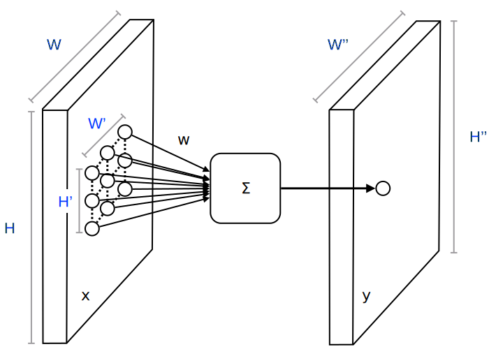
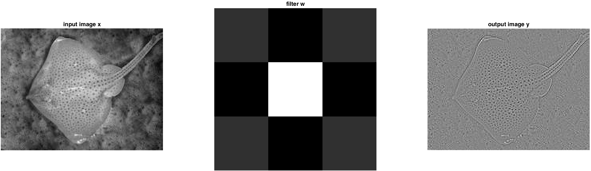
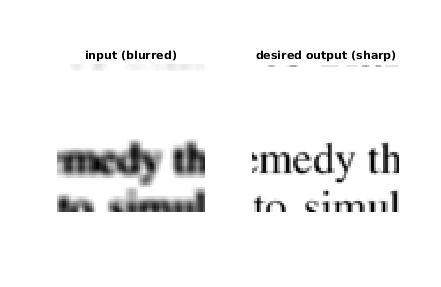
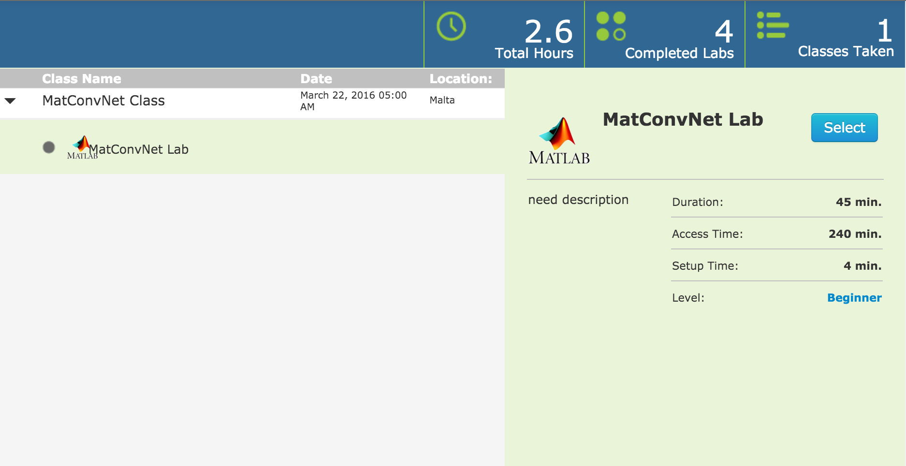
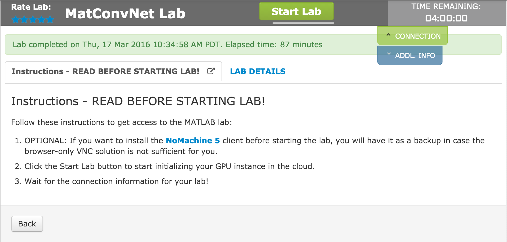
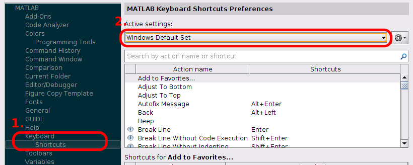

By Andrea Vedaldi, Karel Lenc, and Joao Henriques
This is an Oxford Visual Geometry Group computer vision practical (Release 2016a).

Convolutional neural networks are an important class of learnable representations applicable, among others, to numerous computer vision problems. Deep CNNs, in particular, are composed of several layers of processing, each involving linear as well as non-linear operators, that are learned jointly, in an end-to-end manner, to solve a particular tasks. These methods are now the dominant approach for feature extraction from audiovisual and textual data.
This practical explores the basics of learning (deep) CNNs. The first part introduces typical CNN building blocks, such as ReLU units and linear filters. The second part explores backpropagation, including designing custom layers and verifying them numerically. The last part demonstrates learning a CNN for text deblurring; this differs from the usual problem of image classification and demonstrates the flexibility of these techniques.
This practical is based on MATLAB and the MatConvNet library. The practical demonstrates how easy it is to use this environment to prototype new network components and architectures. By only using familar MATLAB syntax, you will be able to implement new layers and take advantage of the GPU for faster computation.
If you are running this in the iV&L Summer School, please refer to the instructions at the end of the document.
Read and understand the requirements and installation instructions. The download links for this practical are:
You can either unpack the archive manually, or use the following MATLAB one-liner:
untar('http://www.robots.ox.ac.uk/~vgg/share/practical-cnn-reg-2016a.tar.gz')
cd practical-cnn-reg-2016a
After the installation is complete, open and edit the script exercise1.m in the MATLAB editor. The script contains commented code and a description for all steps of this exercise, for Part I of this document. You can cut and paste this code into the MATLAB window to run it, or use the shortcut Ctrl+Enter to run a code section. You will need to modify it as you go through the session. Other files exercise2.m, and exercise3.m, are given for Part II and III.
Each part contains several Questions (that may require pen and paper) and Tasks (that require experimentation or coding) to be answered/completed before proceeding further in the practical.
In this part we will explore two fundamental building blocks of CNNs, linear convolution and non-linear activation functions. Open exercise1.m and run up to the setup() command, which initializes the MATLAB environment to use MatConvNet.
A convolutional neural network (CNN) is a sequence of linear and non-linear convolution-like operators. The most important example of such operators is linear convolution. In this part, we will explore linear convolution and see how to use it in MatConvNet.
Recall that linear convolution applies one (or more) filters

Start by identifying and then running the following code fragment in exercise1.m:
% Load an image and convert it to gray scale and single precision
x = im2single(rgb2gray(imread('data/ray.jpg'))) ;
% Define a filter
w = single([
0 -1 -0
-1 4 -1
0 -1 0]) ;
% Apply the filter to the image
y = vl_nnconv(x, w, []) ;
The code loads the image data/ray.jpg and applies to it a linear filter using the linear convolution operator. The latter is implemented by the MatConvNet function vl_nnconv(). Note that all variables x, w, and y are in single precision; while MatConvNet supports double precision arithmetic too, single precision is usually preferred in applications as memory is often a bottleneck. The result can be visualized as follows:
% Visualize the results
figure(11) ; clf ; colormap gray ;
set(gcf, 'name', 'Part 1.1: convolution') ;
subplot(2,2,1) ;
imagesc(x) ;
axis off image ;
title('Input image x') ;
subplot(2,2,2) ;
imagesc(w) ;
axis off image ;
title('Filter w') ;
subplot(2,2,3) ;
imagesc(y) ;
axis off image ;
title('Output image y') ;
Task: Run the code above and examine the result, which should look like the following image:

The input
Questions:
- If
$H \times W$ is the size of the input image,$H' \times W'$ the size of the filter, what is the size$H'' \times W''$ of the output image?- The filter
$\bw$ given above is a discretized Laplacian operator. Which type of visual structures (corners, bars, ...) do you think may excite this filter the most?
In neural networks, one usually operates with filter banks instead of individual filters. Each filter can be though of as computing a different feature channel, characterizing a particular statistical property of the input image.
To see how to define and use a filter bank, create a bank of three filters as follows:
% Concatenate three filters in a bank
w1 = single([
0 -1 0
-1 4 -1
0 -1 0]) ;
w2 = single([
-1 0 +1
-1 0 +1
-1 0 +1]) ;
w3 = single([
-1 -1 -1
0 0 0
+1 +1 +1]) ;
wbank = cat(4, w1, w2, w3) ;
The first filter vl_nnconv(x, wbank, []) then applies all the filters in the bank to the input image x. Note that the output y is not just a matrix, but a 3D array (often called a tensor in the CNN jargon). This tensor has dimensions
Question: What is the number of feature channels
$C$ in this example? Why?Task: Run the code above and visualize the individual feature channels in the tensor
yby using the provided functionshowFeatureChannels(). Do the channel responses make sense given the filter used to generate them?
In a CNN, not only the output tensor, but also the input tensor x and the filters wbank can have multiple feature channels. In this case, the convolution formula becomes:
Questions:
- If the input tensor
$\bx$ has$C$ feature channels, what should be the third dimension of$\bw$ ?- In the code above, the command
wbank = cat(4, w1, w2, w3)concatenates the tensorsw1,w2, andw3along the fourth dimension. Why is that given that filters should have three dimensions?
Finally, in training CNNs it is often important to be able to work efficiently with batches of data. MatConvNet allows packing more than one instance of the tensor x by stacking the different instances along the fourth dimension of the array:
x1 = im2single(rgb2gray(imread('data/ray.jpg'))) ;
x2 = im2single(rgb2gray(imread('data/crab.jpg'))) ;
x = cat(4, x1, x2) ;
y = vl_nnconv(x, wbank, []) ;
Task: Run the code above and visualize the result. Convince yourself that each filter is applied to each image.
CNNs are obtained by composing several operators, individually called layers. In addition to convolution and other linear layers, CNNs should contain non-linear layers as well.
Question: What happens if all layers are linear?
The simplest non-linearity is given by scalar activation functions, which are applied independently to each element of a tensor. Perhaps the simplest and one of the most useful examples is the Rectified Linear Unit (ReLU) operator:
In MatConvNet, ReLU is implemented by the vl_nnrelu function. To demonstrate its use, we convolve the test image with the negated Laplacian, and then apply ReLU to the result:
% Convolve with the negated Laplacian
y = vl_nnconv(x, - w, []) ;
% Apply the ReLU operator
z = vl_nnrelu(y) ;
Task: Run this code and visualize images
x,y, andz.Questions:
- Which kind of image structures are preferred by this filter?
- Why did we negate the Laplacian?
ReLU has a very important effect as it implicitly sets to zero the majority of the filter responses. In a certain sense, ReLU works as a detector, with the implicit convention that a certain pattern is detected when a corresponding filter response is large enough (greater than zero).
In practice, while signals are usually centered and therefore a threshold of zero is reasonable, there is no particular reason why this should always be appropriate. For this reason, the convolution operator allows to specify a bias term for each filter response. Let us use this term to make the response of ReLU more selective:
bias = single(- 0.2) ;
y = vl_nnconv(x, - w, bias) ;
z = vl_nnrelu(y) ;
There is only one bias term because there is only one filter in the bank (note that, as for the rest of the data, bias is a single precision quantity). The bias is applied after convolution, effectively subtracting 0.2 from the filter responses. Hence, now a response is not suppressed by the subsequent ReLU operator only if it is at least 0.2 after convolution.
Task: Run this code and visualize images
x,y, andz.Question: Is the response now more selective?
Remark: There are many other building blocks used in CNNs, the most important of which is perhaps max pooling. However, convolution and ReLU can solve already many problems, as we will see in the remainder of the practical.
Training CNNs is normally done using a gradient-based optimization method. The CNN
The gradient is easily computed using using the chain rule. If all network variables and parameters are scalar, this is given by2:
Note that all intermediate derivatives in the chain rule may be affected by this size explosion except for the derivative of the network output that, being the loss, is a scalar.
Question: The output derivatives have the same size as the parameters in the network. Why?
Back-propagation allows computing the output derivatives in a memory-efficient manner. To see how, the first step is to generalize the equation above to tensors using a matrix notation. This is done by converting tensors into vectors by using the
Some might have noticed that, while projections remain small, each factor \eqref{e:factor} does contain one of the large derivatives that we cannot compute explicitly. The trick is that CNN toolboxes contain code that can compute the projected derivatives without explicitly computing this large factor. In particular, for any building block function
For example, this is how this looks for the convolution operator:
y = vl_nnconv(x,w,b) ; % forward mode (get output)
p = randn(size(y), 'single') ; % projection tensor (arbitrary)
[dx,dw,db] = vl_nnconv(x,w,b,p) ; % backward mode (get projected derivatives)
and this is how it looks for ReLU operator:
y = vl_nnrelu(x) ;
p = randn(size(y), 'single') ;
dx = vl_nnrelu(x,p) ;
Implementing new layers in a network is conceptually simple, but error prone. A simple way of testing a layer is to check whether the derivatives computed using the backward mode approximately match the derivatives computed numerically using the forward mode. The next example, contained in the file exercise2.m, shows how to do this:
% Forward mode: evaluate the convolution
y = vl_nnconv(x, w, []) ;
% Pick a random projection tensor
p = randn(size(y), 'single') ;
% Backward mode: projected derivatives
[dx,dw] = vl_nnconv(x, w, [], p) ;
% Check the derivative numerically
figure(21) ; clf('reset') ;
set(gcf,'name','Part 2.1: single layer backrpop') ;
checkDerivativeNumerically(@(x) proj(p, vl_nnconv(x, w, [])), x, dx) ;
Questions:
- Recall that the derivative of a function
$y=f(x)$ is given by$$ \frac{\partial f}{\partial x}(x) = \lim_{\delta\rightarrow 0} \frac{f(x+\delta) - f(x)}{\delta} $$ Open the filecheckDerivativeNumerically.m. Can you identify the lines in the code above that use this expression?- Note that
checkDerivativeNumerically()is applied to the function@(x) proj(p, vl_nnconv(x, w, [])). This syntax defines a function on the fly (an anonymous closure to be more precise). In this case, the purpose of the closure is to evaluate the expression for a variablexand a fixed value ofw. Furthermore, the closure projects the output ofvl_nnconv()ontopby calling theproj()function. Why?Tasks:
- Run the code, visualizing the results. Convince yourself that the numerical and analytical derivatives are nearly identical.
- Modify the code to compute the derivative of the first element of the output tensor
$\by$ with respect to all the elements of the input tensor$\bx$ . Hint: it suffices to change the value of$\bp$ .- Modify the code to compute the derivative with respect to the convolution parameters
$\bw$ instead of the convolution input$\bx$ .
Next, we use the backward mode of convolution and ReLU to implement backpropagation in a network that consists of two layers:
% Forward mode: evaluate conv followed by ReLU
y = vl_nnconv(x, w, []) ;
z = vl_nnrelu(y) ;
% Pick a random projection tensor
p = randn(size(z), 'single') ;
% Backward mode: projected derivatives
dy = vl_nnrelu(z, p) ;
[dx,dw] = vl_nnconv(x, w, [], dy) ;
Question (important) In the code above, in backward mode the projection
pis fed to thevl_nnreluoperator. However, thevl_nnconvoperator now receivesdyas projection. Why?Tasks:
- Run the code and use
checkDerivativeNumerically()to compare the analytical and numerical derivatives. Do they differ?- (Optional) Modify the code above to a chain of three layers: conv + ReLU + conv.
Creating new layers is a common task when experimenting with novel CNN architectures. MatConvNet makes this particularly easy, since you can use all standard MATLAB operators and functions. The same code also works on the GPU.
In this part we will show how to implement a layer computing the Euclidean distance between a tensor x and a reference tensor r and your goal will be then to implement absolute difference (L1) loss. This layer will be used later to learn a CNN from data.
The first step is to write the forward mode. This is contained in the l2LossForward.m function. Open the file and check its content:
function y = l2LossForward(x,r)
delta = x - r ;
y = sum(delta(:).^2) ;
The function computes the difference x - r, squares the individual elements (.^2), and then sums the results. The vectorization delta(:) just turns the tensor into a vector by stacking, so that the sum is carried across all elements (by default sum operates only along the first dimension). The overall result is a scalar y, which is the sum of the squared Euclidean distances between x and r, for all data instances.
Next, we need to implement the backward mode:
function dx = l2LossBackward(x,r,p)
dx = 2 * p * (x - r) ;
Note that the backward mode takes the projection tensor p as an additional argument. Let us show that this code is correct. Recall that the goal of the backward mode is to compute the derivative of the projected function:
Here the subscript
In order to see how to implement the backward mode, compute the derivative with respect to each input element
Tasks:
- Verify that the forward and backward functions are correct by computing the derivatives numerically using
checkDerivativeNumerically().- Implement the
l1LossForward.mandl1LossBackward.mto compute the L1 distance (sum of absolute differences):$$ f(\bx) = \sum_{lmnt} \lvert x_{lmnt} - r_{lmnt} \rvert. $$ In order to implement the backward pass, you need to find$$ \frac{\partial}{\partial x_{ijkt}} \langle \bp, f(\bx) \rangle = \frac{\partial}{\partial x_{ijkt} } \left[ p \sum_{lmnt} \lvert x_{lmnt} - r_{lmnt} \rvert \right]. $$ Recall that for${v} \neq 0$ :$$ \frac{\partial |v|}{\partial v} = \begin{cases} -1 & v<0 \\ 1 & v>0 \end{cases}. $$ - Make sure that both the forward and backward modes are correctly modified by verifying the result numerically once more. What happens for the components of
$\bx$ that are zero or very close to zero?
By now you should be familiar with two basic CNN layers, convolution and ReLU, as well as with the idea of backpropagation. In this part, we will build on such concepts to learn a CNN model.
CNN are often used for classification; however, they are much more general than that. In order to demonstrate their flexibility, here we will design a CNN that takes an image as input and produces an image as output (instead of a class label).
We will consider in particular the problem of deblurring images of text, as in the following example:

The first task is to load the training and validation data and to understand its format. Start by opening in your MATLAB editor exercise3.m. The code responsible for loading the data is
imdb = load('data/text_imdb.mat') ;
The variable imdb is a structure containing
imdb.images.data: a imdb.images.label: a imdb.images.set: a Run the following code, which displays the first image in the dataset and its label:
figure(31) ; set(gcf, 'name', 'Part 3.1: Data') ; clf ;
subplot(1,2,1) ; imagesc(imdb.images.data(:,:,:,1)) ;
axis off image ; title('Input (blurred)') ;
subplot(1,2,2) ; imagesc(imdb.images.label(:,:,:,1)) ;
axis off image ; title('Desired output (sharp)') ;
colormap gray ;
Task: make sure you understand the format of
imdb. Use MATLAB to find out the number of training and validation images as well as the resolution (size) of each image.
It is often important to center the data to better condition the learning problem. This is usually obtained by subtracting the mean pixel intensity (computed from the training set) from each pixel. Here, however, pixels are rescaled and shifted to have values in the interval
Question: why was the interval
$[-1, 0]$ chosen? Hint: what intensity corresponds to 'white'? What does the convolution operator do near the image boundaries?
Next we define a CNN net and initialize its weights randomly. A CNN is simply a collection of interlinked layers. While these can be assembled 'manually' as you did in Part 2, it is usually more convenient to use a wrapper.
MatConvNet contains two wrappers, SimpleNN and DagNN. SimpleNN is suitable for simple networks that are a chain of layers (as opposed to a more general graph). We will use SimpleNN here.
This wrapper defines the CNN as a structure net containing a cell-array layers listed in order of execution. Open initializeSmallCNN.m and find this code:
net.layers = { } ;
The first layer of the network is a convolution block:
net.layers{end+1} = struct(...
'name', 'conv1', ...
'type', 'conv', ...
'weights', {xavier(3,3,1,32)}, ...
'pad', 1, ...
'learningRate', [1 1], ...
'weightDecay', [1 0]) ;
The fields are as follows:
name specifies a name for the layer, useful for debugging but otherwise arbitrary.
type specifies the layer type, in this case convolution.
weights is a cell array containing the layer parameters, in this case two tensors for the filters and the biases. The filters are initialized using the xavier() function to have dimensions xavier() also initializes the biases to be zero.
pad specifies the amount of zero padding to apply to the layer input. By using a padding of one pixel and a
learningRate contains two layer-specific multipliers to adjust the learning rate for the filters and the biases.
weightDecay contains two layer-specific multipliers to adjust the weight decay (regularization strength) for the layer filters and biases. Note that weight decay is not applied to the biases.
Question: what would happen if
padwas set to zero?
The convolution layer is followed by ReLU, which is given simply by:
net.layers{end+1} = struct(...
'name', 'relu1', ...
'type', 'relu') ;
This pattern is repeated (possibly varying the number and dimensions of filters) for a total of three convolutional layers separated by ReLUs.
Question: The last layer, generating the output image, is convolutional and is not followed by ReLU. Why?
The command vl_simplenn_display() can be used to print information about the network. Here is a subset of this information:
| layer | 0 | 1 | 2 | 3 | 4 | 5 | 6 |
|---|---|---|---|---|---|---|---|
| type | input | conv | relu | conv | relu | conv | custom |
| name | n/a | conv1 | relu1 | conv2 | relu2 | prediction | loss |
| support | n/a | 3 | 1 | 3 | 1 | 3 | 1 |
| filt dim | n/a | 1 | n/a | 32 | n/a | 32 | n/a |
| num filts | n/a | 32 | n/a | 32 | n/a | 1 | n/a |
| stride | n/a | 1 | 1 | 1 | 1 | 1 | 1 |
| pad | n/a | 1 | 0 | 1 | 0 | 1 | 0 |
| rf size | n/a | 3 | 3 | 5 | 5 | 7 | 7 |
Questions: Look carefully at the generated table and answer the following questions:
- How many layers are in this network?
- What is the support (height and width) and depth (number of feature channels) of each intermediate tensor?
- How is the number of feature channels related to the dimensions of the filters?
The last row reports the receptive field size for the layer. This is the size (in pixels) of the local image region that affects a particular element in a feature map.
Question: what is the receptive field size of the pixel in the output image (generated by the prediction layer)? Discuss whether a larger receptive field size might be preferable for this problem and how this might be obtained.
In this part we will use SGD to learn the CNN from the available training data. As noted above, the CNN must however terminate in a loss layer. We add one such layer as follows:
% Add a loss (using our custom layer)
net = addCustomLossLayer(net, @l2LossForward, @l2LossBackward) ;
The function addCustomLossLayer() creates a layer structure compatible with SimpleNN and adds it as the last of the network. This structure contains handles to the functions defined in Part 2, namely l2LossForward() and l2LossBackward().
Next, setup the learning parameters:
trainOpts.expDir = 'data/text-small' ;
trainOpts.gpus = [] ;
trainOpts.batchSize = 16 ;
trainOpts.learningRate = 0.02 ;
trainOpts.plotDiagnostics = false ;
trainOpts.numEpochs = 20 ;
trainOpts.errorFunction = 'none' ;
The fields are as follows:
expDir specifies a directory to store intermediate data (snapshot and figures) as well as the final model. Note that the code resumes execution from the last snapshot; therefore change this directory or clear it if you want to start learning from scratch.
gpus contains a list of GPU IDs to use. For now, do not use any.
batchSize specifies how many images to include in a batch. Here we use 16.
learningRate is the learning rate in SGD.
plotDiagnostic can be used to plot statistics during training. This is slow, but can help setting a reasonable learning rate. Leave it off for now.
numEpochs is the number of epochs (passes through the training data) to perform before SGD stops.
errorFunction disables plotting the default error functions that are suitable for classification, but not for our problem.
Finally, we can invoke the learning code:
net = cnn_train(net, imdb, @getBatch, trainOpts) ;
The getBatch() function, passed as a handle, is particularly important. The training script cnn_train uses getBatch() to extract the images and corresponding labels for a certain batch, as follows:
function [im, label] = getBatch(imdb, batch)
im = imdb.images.data(:,:,:,batch) ;
label = imdb.images.label(:,:,:,batch) ;
The function takes as input the imdb structure defined above and a list batch of image indexes that should be returned for training. In this case, this amounts to simply extract and copy some data; however, in general getBatch can be used to e.g. read images from disk or apply transformations to them on the fly.
Task: run the training code and wait for learning to be complete. Note that the model is saved in
data/text-small/net-epoch-16.mat, where 16 is the number of the last epoch.
The network is evaluated on the validation set during training. The validation error (which in our case is the average squared differences between the predicted output pixels and the desired ones), is a good indicator of how well the network is doing (in practice, one should ultimately evaluate the network on a held-out test set).
In our example it is also informative to evaluate the qualitative result of the model. This can be done as follows:
train = find(imdb.images.set == 1) ;
val = find(imdb.images.set == 2) ;
figure(33) ; set(gcf, 'name', 'Part 3.4: Results on the training set') ;
showDeblurringResult(net, imdb, train(1:30:151)) ;
figure(34) ; set(gcf, 'name', 'Part 3.4: Results on the validation set') ;
showDeblurringResult(net, imdb, val(1:30:151)) ;
Since the CNN is convolutional, it can be applied to arbitrarily-sized images. imdb.examples contains a few larger examples too. The following code shows one:
figure(35) ;
set(gcf, 'name', 'Part 3.4: Larger example on the validation set') ;
colormap gray ;
subplot(1,2,1) ; imagesc(imdb.examples.blurred{1}, [-1 0]) ;
axis image off ;
title('CNN input') ;
res = vl_simplenn(net, imdb.examples.blurred{1}) ;
subplot(1,2,2) ; imagesc(res(end).x, [-1 0]) ;
axis image off ;
title('CNN output') ;
Questions:
- Do you think the network is doing a good job?
- Is there any obvious difference between training and validation performance?
So far, we have trained a single small network to solve this problem. Here, we will experiment with several variants to try to improve the performance as much as possible.
Before we experiment further, however, it is beneficial to switch to using a GPU. If you have a GPU and MATLAB Parallel Toolbox installed, you can try running the code above on the GPU by changing a single switch. To prepare MatConvNet to use the GPU, change the first line of the script from setup to:
setup('useGpu', true) ;
Assuming that the GPU has index 1 (which is always the case if there is a single CUDA-compatible GPU in your machine), modify the training options to tell MatConvNet to use that GPU:
trainOpts.expDir = 'data/text-small-gpu'
trainOpts.gpus = [1] ;
The code above also changes expDir in order to start a new experiment from scratch.
Task: Test GPU-based training (if possible). How much faster does it run compared to CPU-based training?
Now we are ready to experiment with different CNNs.
Task: Run a new experiment, this time using the
initializeLargeCNN()function to construct a larger network.Questions:
- How much slower is this network compared to the small model?
- What about the quantitative performance on the validation set?
- What about the qualitative performance?
You are now in control. Play around with the model definition and try to improve the performance as much as possible. For example:
And, of course, make sure to beat the other students.
Remark: You can see the relative change of the network weights by setting
trainOpts.plotDiagnostics = true ;
The code for this practical is written using the software package MatConvNet. This is a software library written in MATLAB, C++, and CUDA and its source code is freely available.
MatConvNet can train complex computer vision models, such as VGG VD and Inception. Several of these models, including a few cool demos, are available for download.
Many more computer vision practicals are available here.
Connect here to Qwick labs as you have been instructed. Press the Select button for the MatConvNet Lab:

Press the Start Lab button:

Wait for the progress bar to finish (this may take one or two minutes):
Click the lab instructions link and follow the rest of the instructions:
Once MATLAB is started, continue from the top.
By default, MATLAB on Linux systems has EMACS-style shortcuts. To change it to more familiar Windows style shortcuts:
preferences in MATLAB Command Window.Keyboard -> ShortcutsActive settings to Windows Default Set
OK to apply and close the settings windowIf you are running the practical through a VNC-based remote desktop connection, you can try adjusting the resolution by changing the setting in the OS (click on the big Ubuntu button on the top left and search for Displays).
If you are familiar with convolution as defined in mathematics and signal processing, you might expect to find the index
The derivative is computed with respect to a certain assignment
The stacking operator
Like for example. ↩
{kind=link}